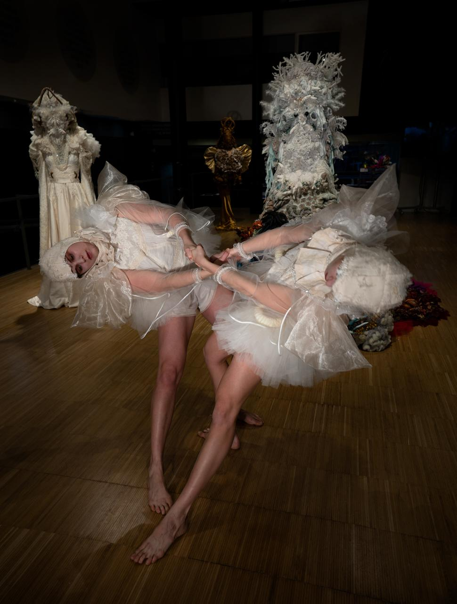
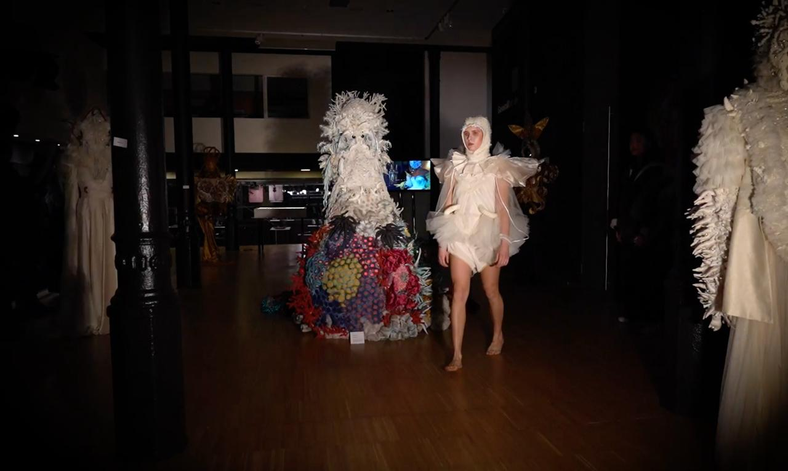
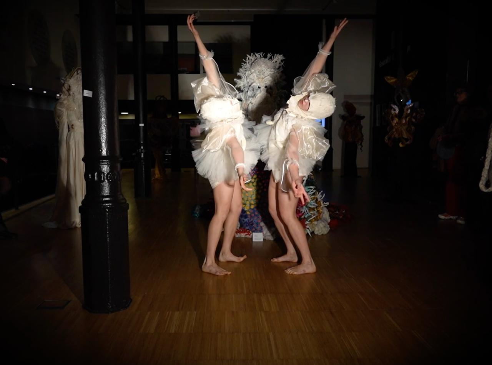

Centre d'Artesania de Catalunya
The piece was about identity and conflict.
Music: Terper @terper.club using parts of a song Letters Makes No Meaning by AGF.
Dancers: Alina & Alona @alenalina
Video, costumes, makeup: Paola Idrontino @paolaidrontinoart



2025
Dance activation
Centre d'Artesania de Catalunya
10 minutes